P01
底部玻璃卡
✓ 无限制
文案 22 → 28日期行 19 → 22
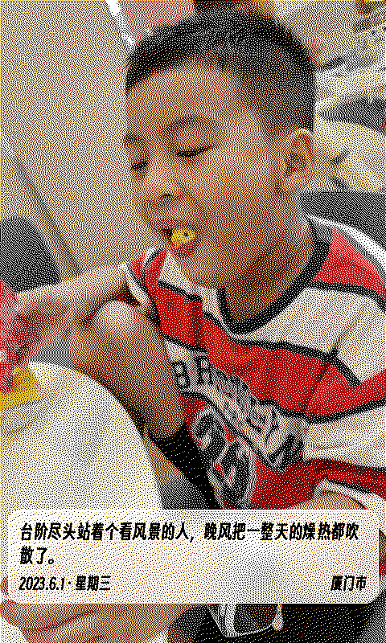
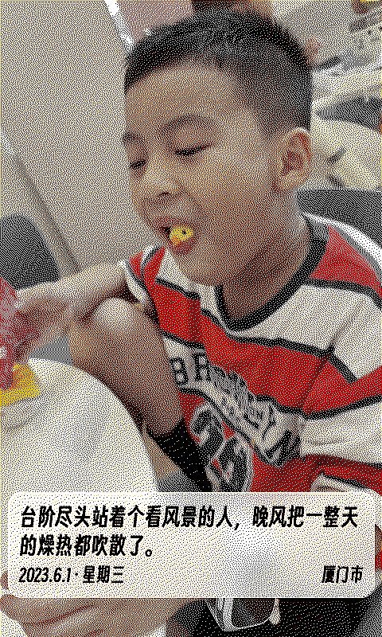
渲染原图（未抖动）
卡片高度随字号自适应增高，无限制
P03
角落手记
✓ 无限制
文案 22 → 26日期行 15 → 18
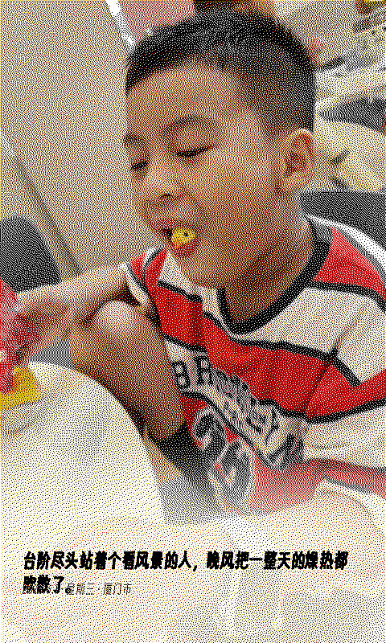
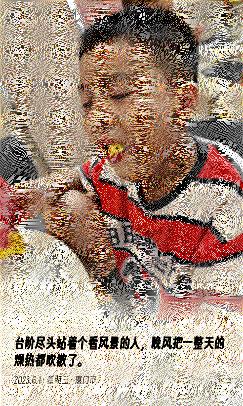
渲染原图（未抖动）
渐变起点随文案上移 20px，无限制
P05
竖排题签·钤印
⚠ 有几何上限
竖排文案 20 → 24印面篆字 26 → 28日期行 15 → 17
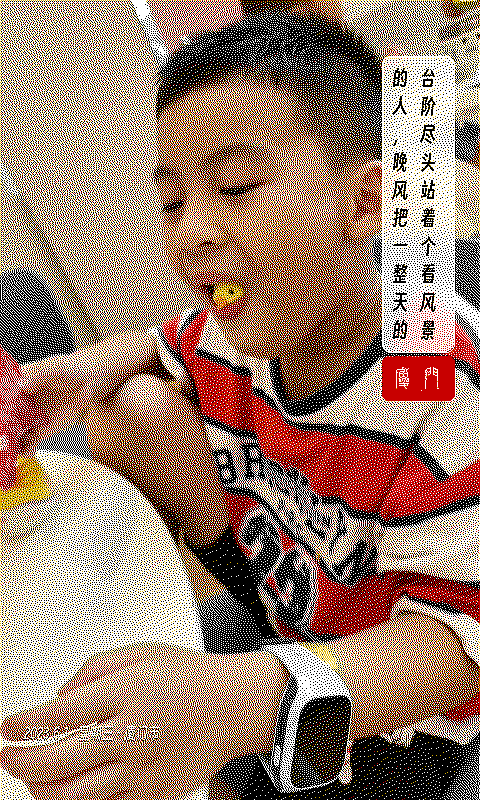
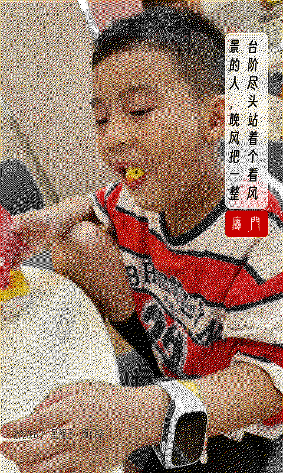
渲染原图（未抖动）
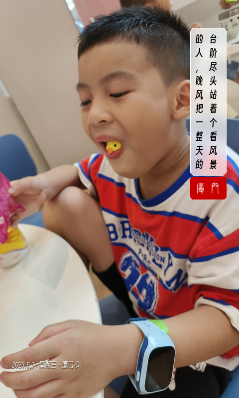
⚠ 受签面宽度限制：24px 已是两列上限；本款为短句设计，文案超过约 18 字会截断
P08
大字日期
⚠ 有几何上限
大日期 84 → 96年份 20 → 22文案 18 → 24日期行 14 → 17
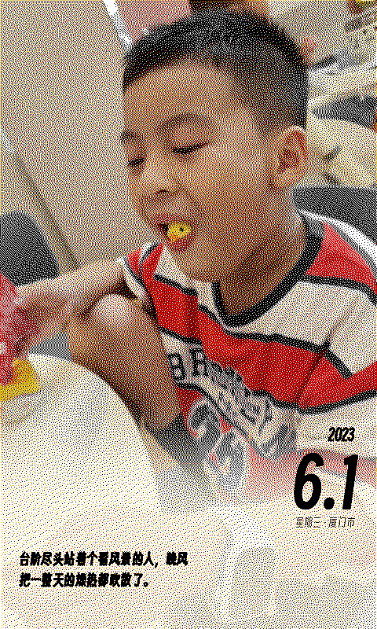
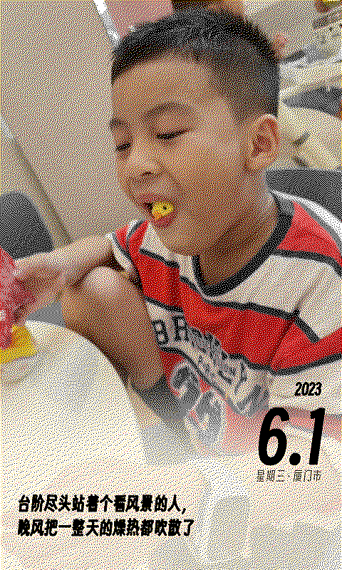
渲染原图（未抖动）
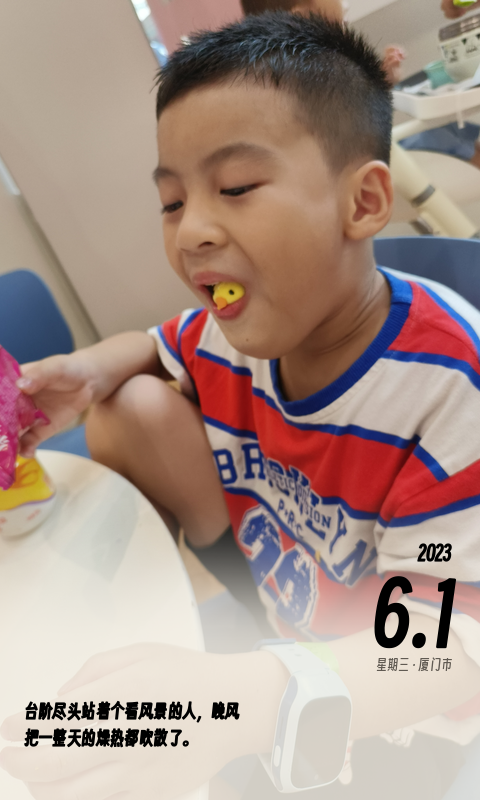
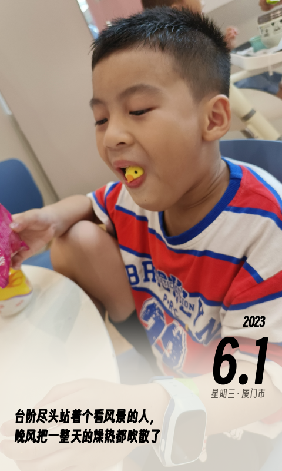
文案区宽 268px 两行为限，超长截断（本款文案是次要元素）
P10
全幅字幕
✓ 无限制
文案 22 → 28日期行 15 → 17
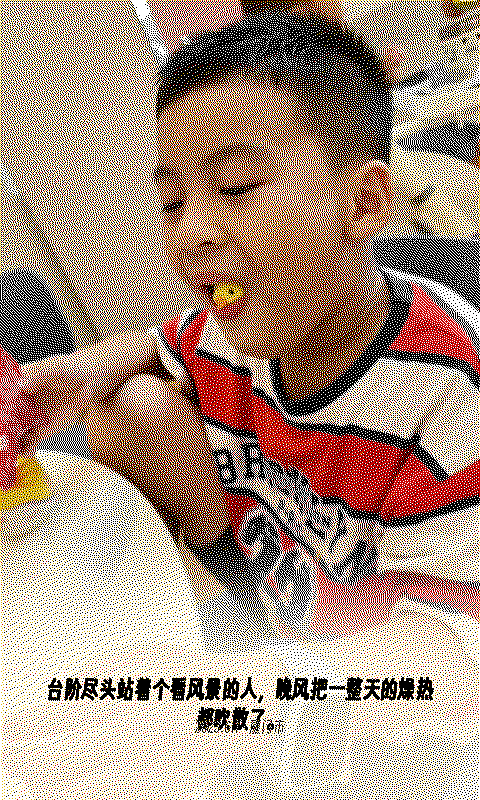
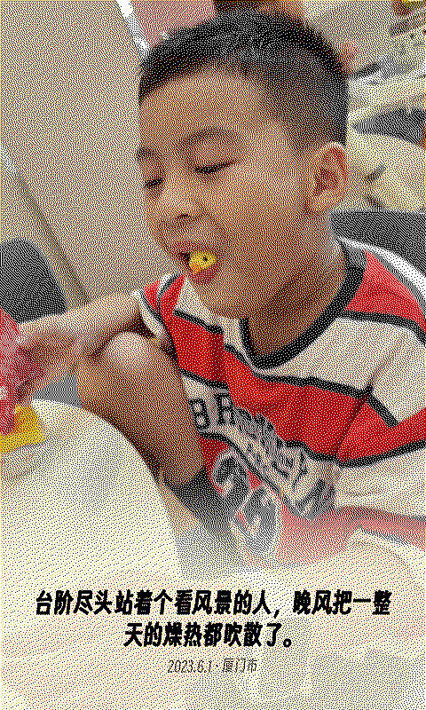
渲染原图（未抖动）
渐变起点随文案上移 10px，无限制
L01
底部玻璃卡
✓ 无限制
文案 22 → 26日期行 18 → 22
渲染原图（未抖动）
无限制
L02
左侧信息栏
⚠ 有几何上限
日期 24 → 28文案 18 → 22星期 13 → 15城市 14 → 16
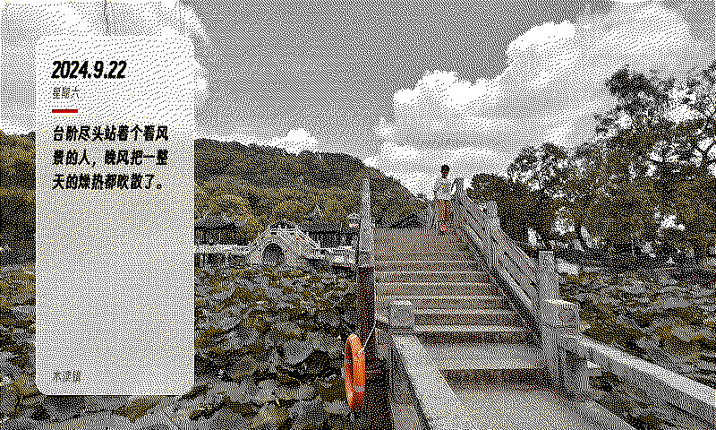
渲染原图（未抖动）
⚠ 受栏宽 176px 限制：文案每行 6 字，再大长文案会超出栏高
L04
电影字幕
✓ 无限制
文案 22 → 26日期行 14 → 17
渲染原图（未抖动）
渐变起点上移 8px，无限制
L05
报纸横条
⚠ 有几何上限
日期 21 → 24文案 15 → 18城市 13 → 15
渲染原图（未抖动）
⚠ 受条高 70px 限制：文案保持单行纪律（超长省略号），18px 已接近上限
L06
顶签悬挂
✓ 无限制
日期 25 → 28文案 16 → 20星期 12 → 15
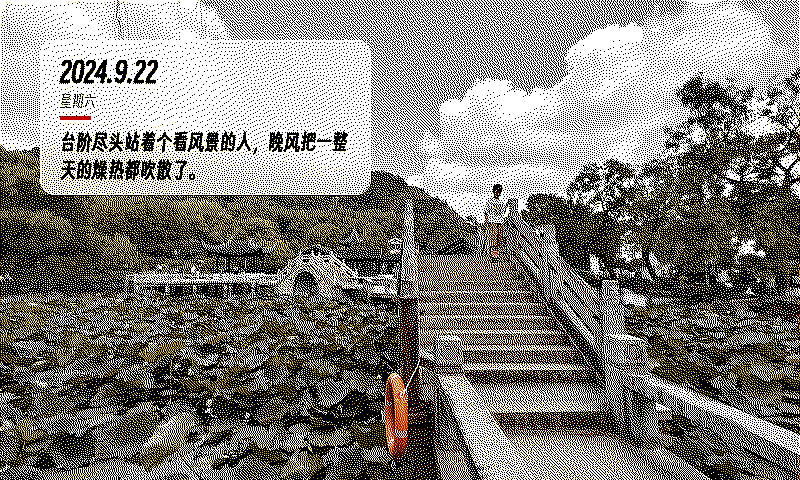
渲染原图（未抖动）
挂签加高 138 → 154px，无限制
L07
落款钤印
✓ 无限制
文案 21 → 25日期行 14 → 17印章 42×61 → 46×70
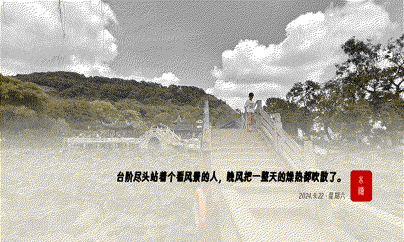
渲染原图（未抖动）
印章随之加大，篆字 20 → 24px，无限制
L10
中央铭牌
✓ 无限制
日期 19 → 24文案 14 → 18
渲染原图（未抖动）
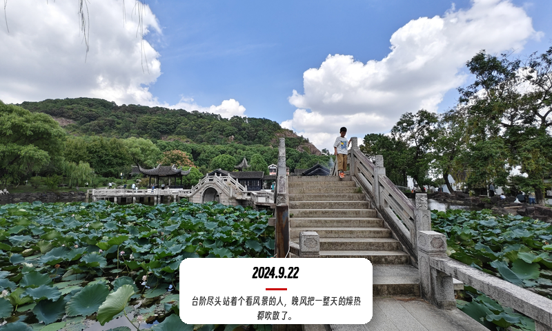
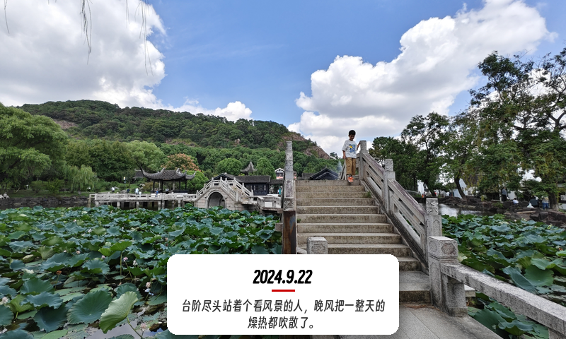
铭牌加宽 280 → 328、加高 96 → 114px，无限制